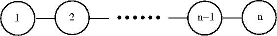

Given an undirected graph of the following form with n nodes, 1 ≤ n ≤ 76:

Your task is to calculate the number of subsets of nodes of the graph with the following properties:
The input will consist of a sequence of numbers n,1 ≤ n ≤ 76. Each number will be on a separate line. The input will be terminated by EOF.
Output the number of subsets as described above on a single line. The number of all subsets will be less than 2^31.
1 2 3 4 5 30
1 2 2 3 4 4410